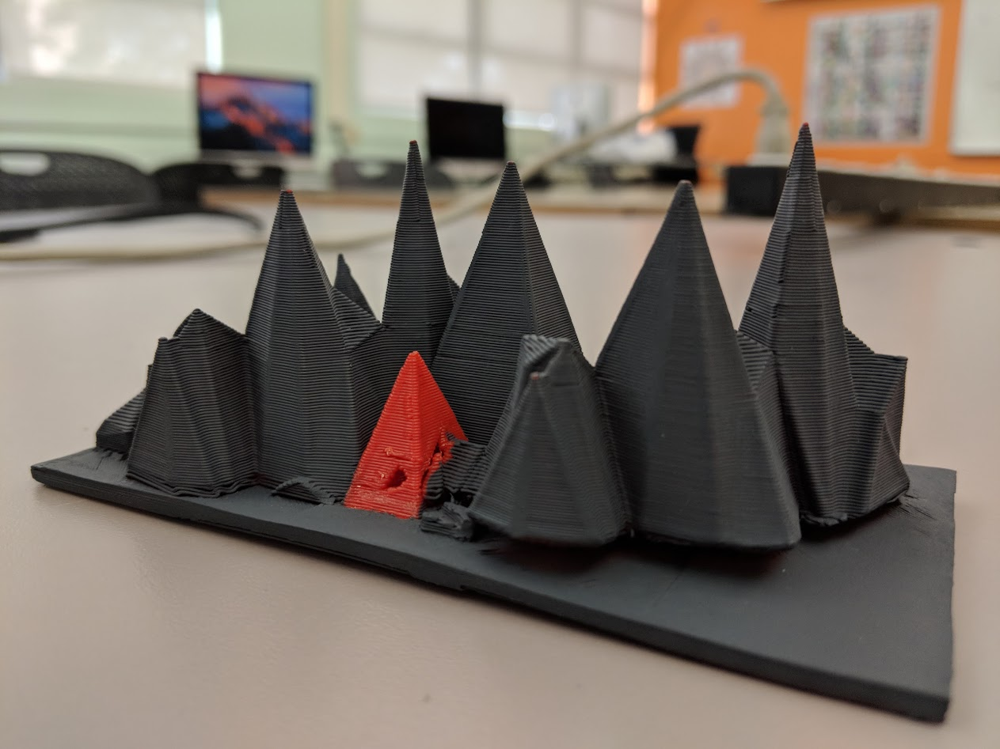

IT'S STILL WORKING!!
The model in the photo was inpired by mountain ranges around the world. I decided to go a bit more abstract and created my own design that alludes to a mountain range, but can be interpreted beyond topography. The choice to paint most of the model in matte grey, and leave one single object unpainted, was intentional to create a bit of ambiguity. Whats before you is what your mind declares. I see a sea of conformity and a single outlier with the courage to be original.
